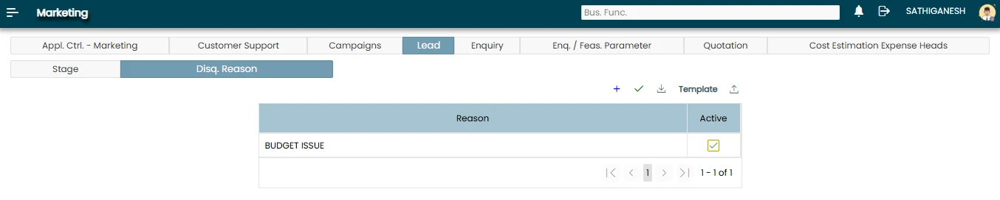

<div data-category="CRM" data-title="Disqualify Reason" data-updated="December 01, 2025" data-contributors="RoadmapIT" data-breadcrumb="Home,CRM,Disqualify Reason">
  <div class="page-content">
    <p>A disqualify reason refers to the specific rationale provided when a lead is marked as unqualified or no longer pursued. This helps maintain an organized and transparent sales process by documenting why certain leads did not progress., Disqualify reason are all configured in this screen.</p>
    <h5>Navigation path:</h5>
    <p class="fs-6">CRM \ Setup \ Setup-Marketing \ Lead \ Disq.Reason</p>
    
    <ul style="list-style-type: none; align-content: center">
      <li class="mouse-icon">Click on <i class="bi bi-plus fs-4 mx-2 text-primary"></i> button</li>
      <li class="mouse-icon">Enter the Reason</li>
      <li class="mouse-icon">Select the Active flag if the Disq. Reason is to be used in transactions</li>
      <li class="mouse-icon">Click <i class="bi bi-check-lg fs-4 mx-1 text-success"></i> to save</li>
    </ul>
  </div>
</div>
